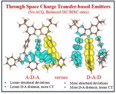

Publications
1. , B. Das, and A. Mondal, "Accelerated Discovery of TADF Emitters via Physics-Guided Machine Learning of Excited-State Properties," Journal of Materials Chemistry A, 13, 33553, 2025
DOI: 10.1039/D5TA03374H
2. , N. Tejiyan, and A. Mondal, "Carbazole-Linked Through-Space TADF Emitters for OLEDs: Tuning Photophysics via Molecular Architecture and Exciton Dynamics," Materials Advances, 6, 6978, 2025
DOI: 10.1039/D5MA00731C
3. and A. Mondal, "Decoding Vibrational Contributions and Exciton Dynamics in TADF Emitters for Enhanced OLED Efficiency," ACS Applied Electronic Materials, 7, 4843, 2025
DOI: 10.1021/acsaelm.5c00286
4. and A. Mondal, "Multiscale Modeling of Charge Transfer in Hole-Transporting Materials: Linking Molecular Morphology to Charge Mobility," The Journal of Chemical Physics, 162, 184702, 2025
Add DOI Here
5. T. Gupta, , S. Saraswat, A. Mondal, and B. Mondal, "Electrochemical Ammonia Oxidation with a Homogeneous Molecular Redox Mediator," Chemical Science, 16, 14377, 2025
Add DOI Here
6. P. Kumar, T. Mishra, , A. Mondal, and S. Basu, "Small Molecule Based 'On-Off-On' AIEgen for Imaging Golgi Apparatus," ACS Applied Bio Materials, 8, 1524, 2025
Add DOI Here
7. A. Sharma, Yati, , A. Mondal, S. Sharma, and A. Singhal, "CO₂ Electroreduction Using Cu Supported Co₃O₄ Catalyst For Multi-Electron Product Formation via Metal Support Interaction," ChemNanoMat, e202500154, 2025
Add DOI Here
8. P. Kumar, T. Mishra, , A. Mondal, and S. Basu, "Small molecule AIEgen for illuminating Golgi Apparatus," ChemBioChem, 26, e202500457, 2025
Add DOI Here
9. A. I. Siddiqui, , R. Nain, A. Mondal, and B. Mondal, "Inverse Effect of Covalently Attached Electron Proton Transfer Mediator in Oxygen Reduction Reaction," Dalton Transactions, 54, 15808, 2025
Add DOI Here
10. , Priyanshu Sorout, and Anirban Mondal, "Rational Design of Organic Emitters with Inverted Singlet-Triplet Gaps for Enhanced Exciton Management," Journal of Physical Chemistry A, 128, 7114, 2024
Add DOI Here
11. Deeksha Rajput, #, Priyanshu Sorout, Anirban Mondal, Sriram Kanvah, "From Molecule to Aggregate: Understanding AIE through Multiscale Experimental and Computational Techniques," The Journal of Physical Chemistry B, 128, 12559, 2024 #equal contribution
Add DOI Here
12. Aditi, , J. Ingle, B. Das, A. Mondal, and S. Basu, "Imaging Golgi-Apparatus in Colon Cancer Cells by Small Molecule Hydrazone Fluorophore," ChemBioChem, 25, e202400507, 2024 #equal contribution
Add DOI Here
13. A. Jain, S. Kumar, , A. Mondal, and I. Gupta, "Sunlight Induced C-H Activation Reactions of Aromatic Heterocycles: First example of A3 and A2B type Corroles as Photoredox Catalysts," Journal of Catalysis, 438, 115705, 2024
Add DOI Here
14. S. Kumar, K. Agarwal, , A. Mondal, and I. Gupta, "Harnessing Solar Power for Oxidation of Organic Compounds by Metal Dipyrrinato Complexes," Chemistry – An Asian Journal, 19, e202400680, 2024
Add DOI Here
15. T. Gupta, Yati, , A. Mondal, and B. Mondal, "Molecular Electrochemical Mediator for Oxidative Multi-Site Proton Coupled Electron Transfer," ACS Catalysis, 14, 17690, 2024
Add DOI Here
16. , Rudranarayan Khatua, Anirban Mondal, "Constructing Multiresonance Thermally Activated Delayed Fluorescence Emitters for Organic LEDs: A Computational Investigation," Journal of Physical Chemistry A, 127, 10393, 2023
Add DOI Here
17. , Rudranarayan Khatua, Anirban Mondal, "A Cost-Effective Approach for Modeling of Multiresonant Thermally Activated Delayed Fluorescence Emitters," Journal of Chemical Theory and Computation, 19, 9290, 2023
Add DOI Here
18. Anu Jaanagal, , Anirban Mondal, Iti Gupta, "Sustainable Approach for C-H Arylation of Heteroarenes Photocatalyzed by Zinc Porphyrins," The Journal of Organic Chemistry, 88, 9424, 2023
Add DOI Here
19. J. Ingle, S. Tat, S. Shinde, M. Kumar, , A. Mondal, M. K. Santra, and S. Basu, "3-Methoxy-pyrrole-Based Small Molecule Damages Mitochondria to Instigate Apoptosis in Breast Cancer Cells," ChemistrySelect, 8, e202300663, 2023
Add DOI Here
20. T. Mishra, P. Kumar, , A. Mondal, and S. Basu, "Powerhouse Targeted Small Molecule-Mediated Chemo-Photodynamic Therapy Induces Apoptosis in Cancer Cells," Materials Advances, 7, 2499, 2026
Add DOI Here
Under Review / In Preparation
21. C. Chauhan, , R. Sewak, A. Mondal, and B. Mondal, "Combined Experimental and Theoretical Elucidation of PCET Pathways in Electrocatalytic Alcohol Oxidation Over (Co)Ni(O)OH and Its Application in PET Upcycling," Under review – RSC Journal of Materials Chemistry A

22. G.P. Nanda, SK. Bahadur, R. Suraksha, , A. Mondal, P. Rajamalli, "Design Strategy for Inducing Delayed Fluorescence via Molecular Flexibility: Structure-Property Relationships in Organic Emitters," Under review – RSC Journal of Materials Chemistry C

23. , N. Tejiyan, K. Singh, "Assessing the Necessity of Range Separation in Density Functional Modeling of TADF Emitters," Under review – RSC Physical Chemistry Chemical Physics

24. S. Sahu, P.K.D. Vana, A. Chauhan, P. Ghosh, V. S. K. Cheerala, , C.N. Sundaresan, N. Kamaraju, "Terahertz Time-Domain Spectroscopy and DFT Analysis of Low-Frequency Vibrational Modes of a Benzoxazolium-coumarin Donor-π-Acceptor Chromophore," Under review – ACS Journal of Physical Chemistry C

25. S. Gayen, R. Sewak, V. Kushwaha, A. Paruthi, , D. Tarunika, R. Boomishankar, A. Mondal, C. M. Reddy, and S. Bhattacharjee, "Restoration of Unconventional Ferroelectricity in a Self-Healing Memristive Organic Crystal," Under Review – Nature Communications

26. C. Pramanik, S. Gupta, , A. Mondal, P. Nayak, K. S. Narayan, "Charge Transport Dynamics in Doped Organic Polymer: Effect of New Split-Functional Dopant on an Amorphous Organic Semiconductor," Under review – Advanced Functional Materials

27. L. Akhtar, A. Kapoor, , S. Karmakar, S. K. Samanta, A. Mondal, and V. S. Mothika, "Singlet Oxygen (¹O₂)-Mediated Photocatalytic H₂O₂ Generation via Accelerated Interfacial Electron Transfer in Conjugated Microporous Polymers," Published – ACS Applied Materials & Interfaces

28. S. Agrawal, T. Swaminathan, , K. Mandal, D. Chopra, A. Mondal, and S. Mukherjee, "Structurally Resolved Water-Soluble Copper Nanoclusters with NIR TADF Exhibiting Multifunctional Catalytic Activity," Under Review – ACS Physical Chemistry Letters

29. , A. Mondal, "Computational Exploration of Non-Radiative Channels in Rigid Multi-Resonant TADF Systems," Manuscript Under Preparation

30. L. Dutta, B. Hasan, T. Gupta, , A. Mondal, B. Mondal, D. Mondal, "Mimicking Cytochrome c Oxidase: Secondary Coordination Sphere Control of Catalytic O₂ Reduction by Methanol–Methanolato-Bridged Nonheme μ-Oxo Diiron(III) Complexes," Manuscript Under Review

Full citation details or PDFs available on request.